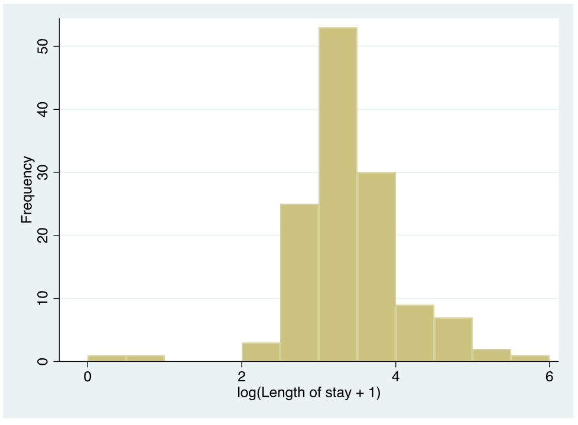
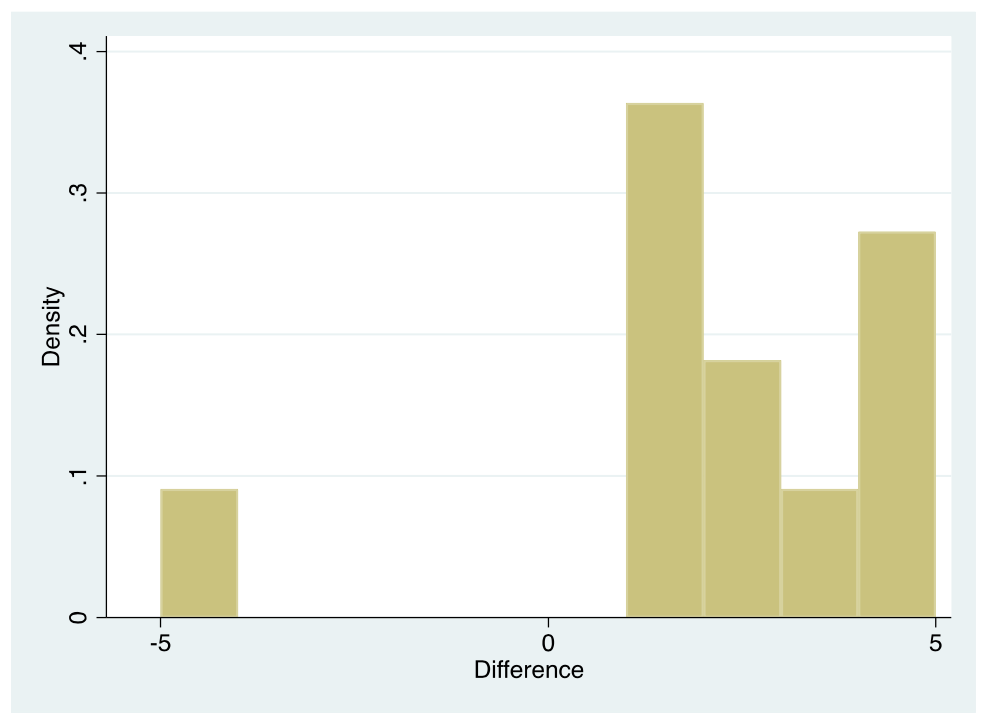
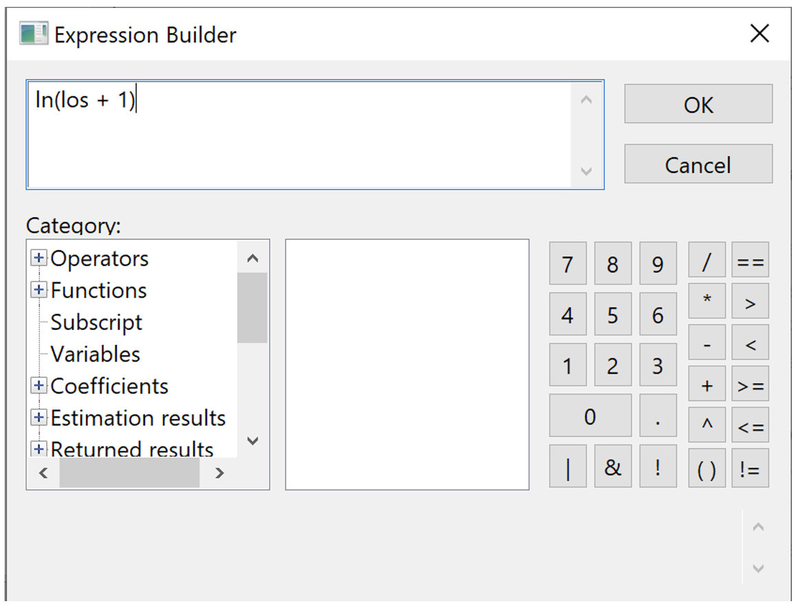
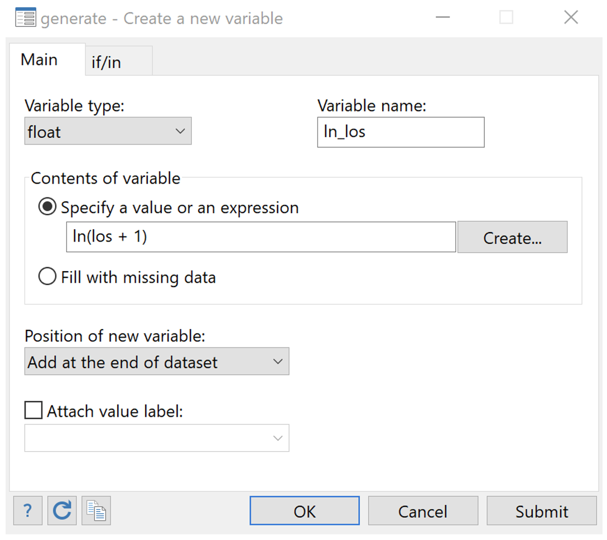
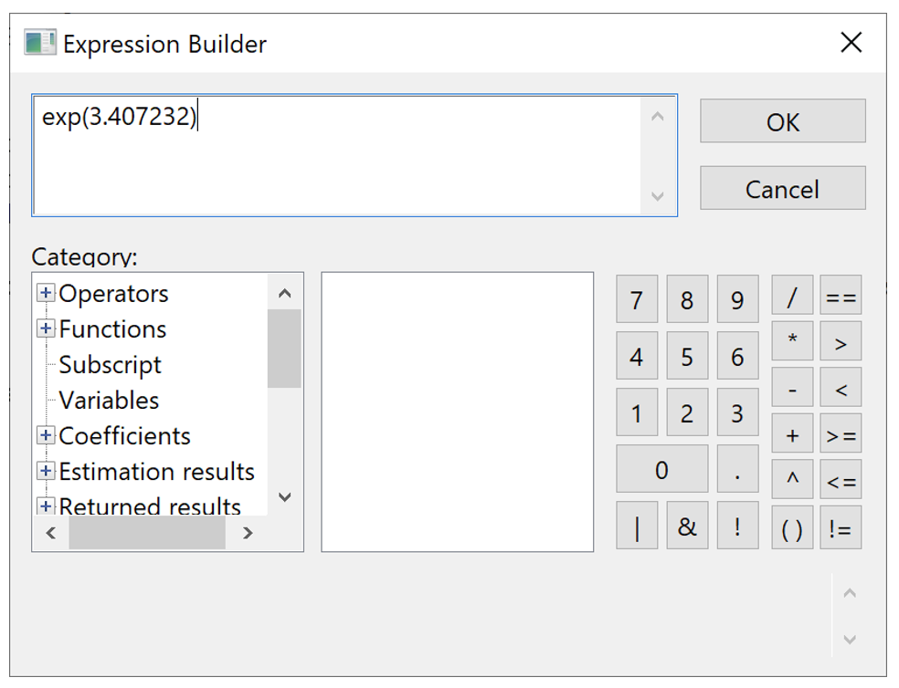
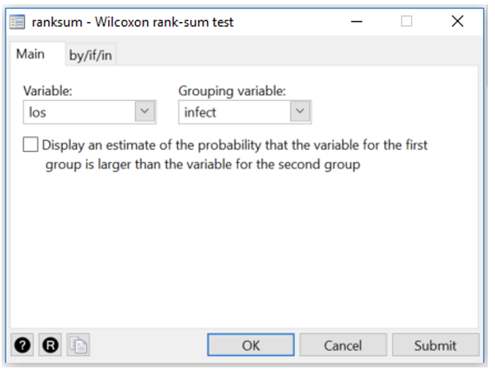
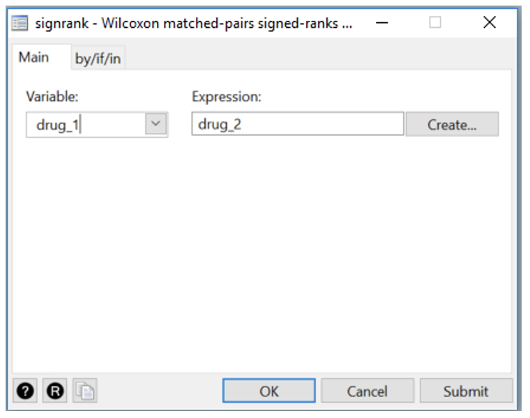
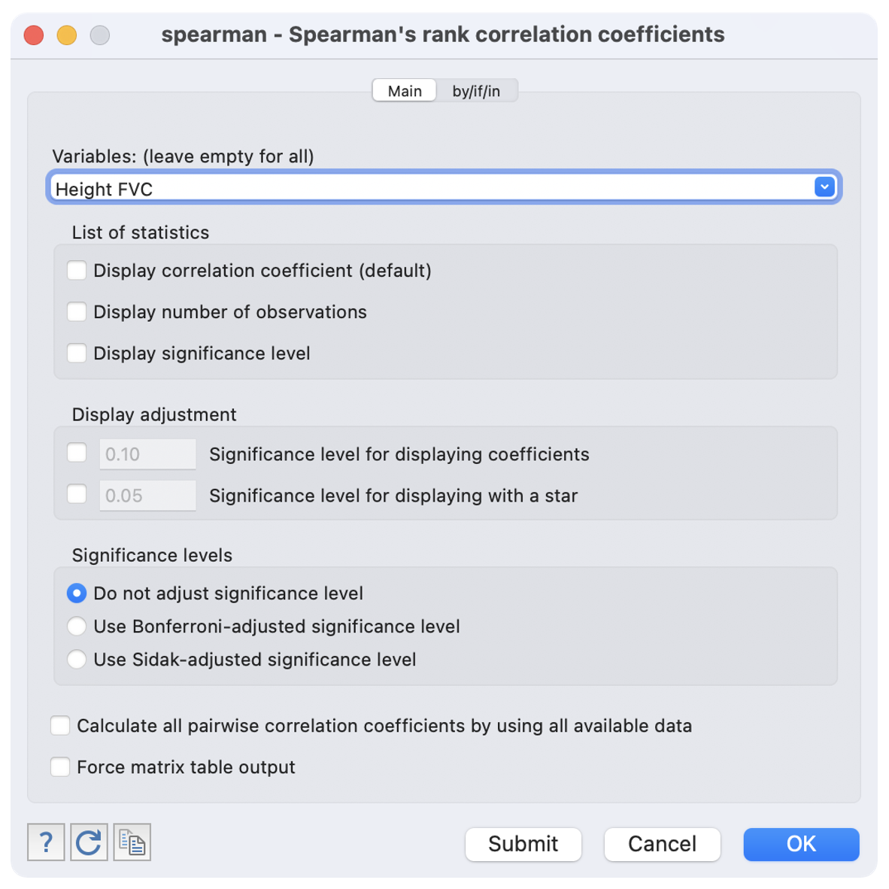
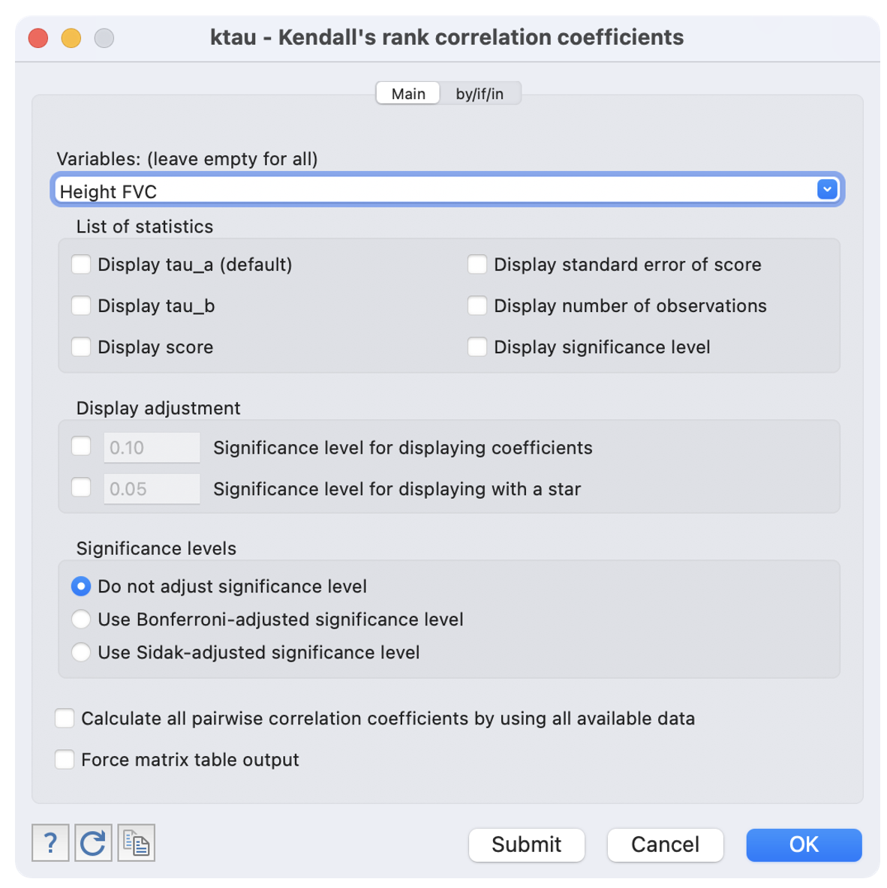
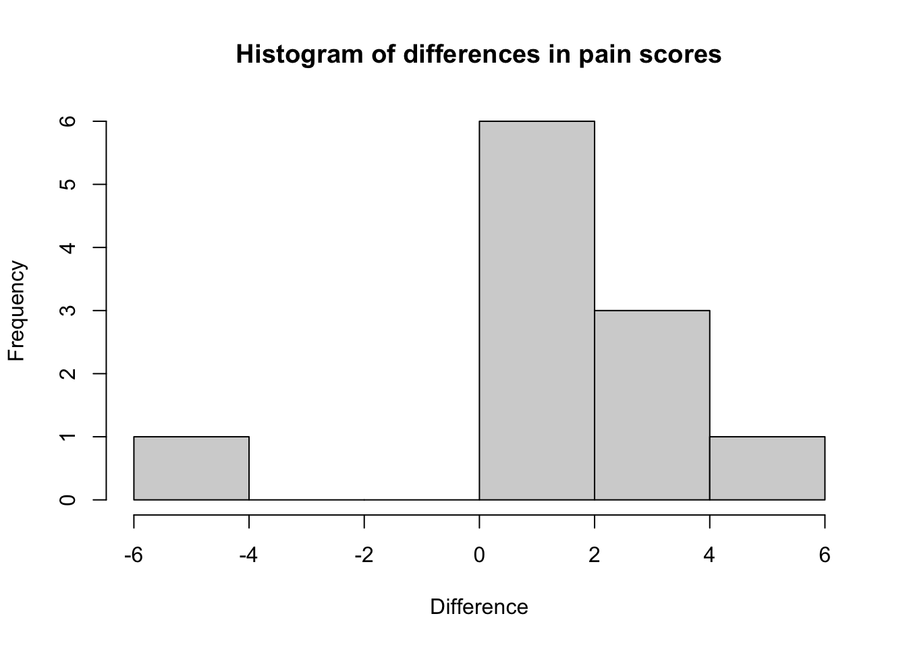

Learning objectives
By the end of this module you will be able to:
- Transform non-normally distributed variables;
- Explain the purpose of non-parametric statistics and key principles for their use;
- Calculate ranks for variables;
- Conduct and interpret a non-parametric independent samples significance test;
- Conduct and interpret a non-parametric paired samples significance test;
- Calculate and interpret the Spearman rank correlation coefficient.
Optional readings
Kirkwood and Sterne (2001); Chapter 13. [UNSW Library Link]
Bland (2015); Chapter 12. [UNSW Library Link]
Acock (2010); Section 7.11.
9.1 Introduction
In general, parametric statistics are preferred for reporting data because the summary statistics (mean, standard deviation, standard error of the mean etc) and the tests used (t-tests, correlation, regression etc) are familiar and the results are easy to communicate. However, non-parametric tests can be used if data are not normally distributed. Non-parametric tests make fewer assumptions about the distribution of the data.
9.2 Transforming non-normally distributed variables
When a variable has a skewed distribution, one possibility is to transform the data to a new variable to try and obtain a normal or near normal distribution. Methods to transform non-normally distributed data include logarithmic transformation of each data point, or using the square root or the square or the inverse (i.e. 1/x) etc.
9.2.1 Worked Example
We have data from 132 patients who had a hospital stay following admission to ICU available on Moodle (mod09_infection.dta and mod09_infection.rds). The distribution of the length of stay for these patients is shown in the histogram in Figure 9.1. As is common with variables that record time, the data are skewed with many patients having relatively short stays and a few patients having very long hospital stays. Clearly, it would be inappropriate to use parametric statistical methods for these data.
When data are positively skewed, as shown in Figure 9.1, a logarithmic transformation can often make the data closer to being normally distributed. This is the most common transformation used. You should note, however, that the logarithmic function cannot handle 0 or negative values. One way to deal with zeros in a set of data is to add 1 to each value before taking the logarithm.
We would generate a new variable, as shown in the Stata or R notes. As the minimum length of stay in these sample data was 0, we have added 1 to each length of stay before taking the logarithm. The distribution of the logarithm of (length of stay + 1) is shown in Figure 9.2.

The distribution now appears much more bell shaped. Table 9.1 shows the descriptive statistics for length of stay before and after logarithmic transformation. Before transformation, the SD is almost as large as the mean value which indicates that the data are skewed and that these statistics are not an accurate description of the centre and spread of the data.
| Length of stay | log(Length of stay + 1) | |
|---|---|---|
| Mean (Standard deviation) | 38.1 (35.78) | 3.41 (0.715) |
| Mean: 95% confidence interval | 31.9 to 44.2 | 3.29 to 3.53 |
| Median [Interquartile range] | 27 [21 to 42] | 3.3 [3.1 to 3.8] |
| Range | 0 to 244 | 0 to 5.5 |
The mean and standard deviation of the transformed length of stay are in log base e (i.e. ln) units. If we raise the mean of the log of length of stay to the power of \(e\), it returns a value of 30.2 days (\(e^{3.41}=30.2\)).
Technically, this is called the geometric mean of the data, and it has a different interpretation to the usual mean, the arithmetic mean. This is a much better estimate in this case of the “average” length of stay than the mean of 38.1 days (95% CI 31.9, 44.2 days) obtained from the non-transformed positively skewed data. Note that, if you have added 1 to your data to deal with 0 values, the back-transformed estimate is approximately equal to the geometric mean.
This set of data also includes a variable summarising whether a patient acquired a nosocomial infection (also known as healthcare-associated infections), which are infections that develop while undergoing medical treatment but were absent at the time of admission.
If we were testing the hypothesis that there was a difference in length of stay between groups (status of nosocomial infection), t-tests should not be used with length of stay, but could be used for the log transformed variable, which is approximately normally distributed. The output from the t-test of the log-transformed length of stay is shown in Table 9.2. This is done using the t-test shown in Module 5.
| Nosocomial infection | n | Mean (SE) | 95% Confidence interval |
|---|---|---|---|
| No | 106 | 3.33 (0.068) | 3.19 to 3.46 |
| Yes | 26 | 3.73 (0.136) | 3.45 to 4.01 |
| Difference (Yes - No) | 0.39 (0.153) | 0.09 to 0.70 |
Here, a two-sample t-test gives a test statistic of 2.59 with 130 degrees of freedom, and a P-value of 0.01.
As explained above, the estimated statistics would need to be converted back to the units in which the variable was measured. From Table 9.2, we can take the exponential of the corresponding log-transformed values:
- the geometric mean of the infected group is approximately 41.5 days with a 95% confidence interval from 31.4 to 55.0 days.
- the geometric mean of the uninfected group is approximately 27.9 days with a 95% confidence interval from 24.4 to 31.9 days.
9.3 Non-parametric significance tests
It is often not possible or sensible to transform a non-normal distribution, for example if there are too many zero values or when we simply want to compare groups using the unit in which the measurement was taken (e.g. length of stay). For this, non-parametric significance tests can be used but the general idea behind these tests is that the data values are replaced by ranks. This also protects against outliers having too much influence.
9.3.1 Ranking variables
Table 9.3 shows how ranks are calculated for the first 21 patients in the length-of-stay data. First the data are sorted in order of their magnitude (from the lowest value to the highest) ignoring the group variable. Each data point is then assigned a rank. Data points that are equal are assigned the mean of their ranks. Thus, the two lengths of stay of 11 days share the ranks 4 and 5, and have a mean rank of 4.5. Similarly, there are 5 people with a length of stay of 14 days and these share the ranks 9 to 13, the mean of which is 11. Once ranks are computed they are assigned to each of the two groups and summed within each group.
| ID | Infection | Length of stay | Rank | Infection=no | Infection=Yes |
|---|---|---|---|---|---|
| 32 | No | 0 | 1 | 1 | |
| 33 | No | 1 | 2 | 2 | |
| 12 | No | 9 | 3 | 3 | |
| 22 | No | 11 | 4.5 | 4.5 | |
| 16 | No | 11 | 4.5 | 4.5 | |
| 28 | Yes | 12 | 6 | 6 | |
| 27 | No | 13 | 7.5 | 7.5 | |
| 20 | No | 13 | 7.5 | 7.5 | |
| 24 | No | 14 | 11 | 11 | |
| 11 | No | 14 | 11 | 11 | |
| 130 | No | 14 | 11 | 11 | |
| 10 | No | 14 | 11 | 11 | |
| 25 | No | 14 | 11 | 11 | |
| 19 | No | 15 | 15.5 | 15.5 | |
| 30 | No | 15 | 15.5 | 15.5 | |
| 23 | No | 15 | 15.5 | 15.5 | |
| 14 | No | 15 | 15.5 | 15.5 | |
| 15 | No | 17 | 20.5 | 20.5 | |
| 13 | No | 17 | 20.5 | 20.5 | |
| 21 | Yes | 17 | 20.5 | 20.5 | |
| 17 | No | 17 | 20.5 | 20.5 |
By assigning ranks to individuals, we lose information about their actual values and this makes it more difficult to detect a difference. However, outliers and extreme values in the data are brought back closer to the data so that they are less influential. For this reason, non-parametric tests have less power than parametric tests and they require much larger differences in the data to show statistical significance between groups.
9.4 Non-parametric test for two independent samples (Wilcoxon ranked sum test)
The non-parametric equivalent to an independent samples t-test (Module 5) is the Wilcoxon ranked sum test, also known as the Mann-Whitney U test. This can be obtained using the ranksum command in Stata, and the wilcox.test in R.
The assumption for this test is that the distributions of the two populations have the same general shape. If this assumption is met, then this test evaluates the null hypothesis that the medians of the two populations are equal. This test does not assume that the populations are normally distributed, nor that their variances are equal.
Conducting the Wilcoxon ranked sum test for our length of stay data yields a P-value of 0.014, providing evidence of a difference in the median length of stay between the groups.
This P-value should be provided alongside non-parametric summary statistics such as medians and inter-quartile ranges. In our example, we can obtain the median length of stay values of 24 (Interquartile Range: 19 to 40 days) in the group with no infection and 37 (Interquartile Range: 24 to 50 days) in the group with infection.
9.5 Non-parametric test for paired data (Wilcoxon signed-rank test)
There are two types of non-parametric tests for paired data, called the Sign test and the Wilcoxon signed rank test. In practice, the Sign test is rarely used and will not be discussed in this course.
If the differences between two paired measurements are not normally distributed, a non-parametric equivalent of a paired t-test (Module 5) should be used. The equivalent test is the Wilcoxon matched-pairs signed rank test, also simply called the Wilcoxon matched-pairs test. This test is resistant to outliers in the data, however the proportion of outliers in the sample should be small. This test evaluates the null hypothesis that the median of the paired differences is equal to zero.
In this test, the absolute differences between the paired scores are ranked and the difference scores that are equal to zero (i.e. scores where there is no difference between the pairs) are excluded. Note that the power of the test (the ability to detect an effect if there truly is an effect) reduces in the presence of zero differences, as the effective sample size (the number of non-zero differences) is reduced.
9.5.1 Worked Example
A crossover trial is done to compare symptom scores for two drugs in 11 people with arthritis (higher scores indicate more severe symptoms). The data are contained in datafile file mod09_arthritis.csv. The data are shown in Table 9.4.
| Patient ID | Score: Drug 1 | Score: Drug 2 | Difference (Drug 2 - Drug 1) |
|---|---|---|---|
| 1 | 3 | 4 | 1 |
| 2 | 2 | 7 | 5 |
| 3 | 3 | 4 | 1 |
| 4 | 8 | 10 | 2 |
| 5 | 6 | 8 | 2 |
| 6 | 6 | 1 | -5 |
| 7 | 2 | 6 | 4 |
| 8 | 3 | 7 | 4 |
| 9 | 5 | 8 | 3 |
| 10 | 9 | 10 | 1 |
| 11 | 7 | 8 | 1 |
The data shows that there is 1 person who has a negative difference, where the symptom score on drug 2 that is smaller than that for drug 1 (i.e., drug 2 is better than drug 1); and 10 people who have a positive difference. No one has the same score for both drugs.
Before doing the analysis let us examine the distribution of the difference of symptom scores between the two drugs. As in Module 5, we first need to compute the difference between the symptom scores. To examine the distribution, we plot a histogram as shown in Figure 9.3.

The histogram shows that the differences are not normally distributed. The data looks negatively skewed with a gap in the histogram between the values of -5 and 0. Therefore, it would not be appropriate to conduct a paired t-test. Hence, we conduct a non-parametric paired test (Wilcoxon matched-pairs signed-rank test).
A non-parametric paired test can be obtained in Stata using the signrank command, or in R using the wilcox.test (specifying paired=TRUE).
The P-value obtained from Stata is 0.044, and the P-value obtained from R is 0.049. The reason these two P-values differ is that R uses a so-called “continuity correction” which makes the test more conservative (i.e. makes the test less likely to reject the null-hypothesis when the null-hypothesis is true). In both cases, there is evidence of a difference in symptom scores between the two drugs.
9.6 Non-parametric estimates of correlation
Estimating correlation using Pearson’s correlation coefficient can be problematic when bivariate Normality cannot be assumed, or in the presence of outliers or skewness. There are two commonly used non-parametric alternatives to Pearson’s correlation coefficient: Spearman’s rank correlation (\(\rho\) or rho), and Kendall’s rank correlation (\(\tau\) or tau).
When estimating the correlation between x and y, Spearman’s rank correlation essentially replaces the observations x and y by their ranks, and calculates the correlation between the ranks. Kendall’s rank correlation compares the ranks between every possible combination of pairs of data to measure concordance: whether high values for x tend to be associated with high values for y (positively correlated) or low values of y (negatively correlated).
In terms of which is the more appropriate measure to use, the following passage from An Introduction to Medical Statistics (Bland (2015)) provides some guidance:
“Why have two different rank correlation coefficients? Spearman’s \(\rho\) is older than Kendall’s \(\tau\), and can be thought of as a simple analogue of the product moment correlation coefficient, Pearson’s r. Kendall’s \(\tau\) is a part of a more general and consistent system of ranking methods, and has a direct interpretation, as the difference between the proportions of concordant and discordant pairs. In general, the numerical value of \(\rho\) is greater than that of \(\tau\). It is not possible to calculate \(\tau\) from \(\rho\) or \(\rho\) from \(\tau\), they measure different sorts of correlation. \(\rho\) gives more weight to reversals of order when data are far apart in rank than when there is a reversal close together in rank, \(\tau\) does not. However, in terms of tests of significance, both have the same power to reject a false null hypothesis, so for this purpose it does not matter which is used.”
We will illustrate estimating rank correlation using the data mod08_lung_function.dta or mod08_lung_function.rds, which has information about height and lung function collected from a sample of 120 adults.
The Spearman rank correlation coefficient is estimated as 0.75, demonstrating a positive association between height and FVC. The Kendall rank correlation coefficient is estimated as 0.56, again demonstrating a positive association between height and FVC.
9.7 Summary
In this module, we have presented methods to conduct a hypothesis test with data that are not normally distributed. Non-parametric methods do not assume any distribution for the data and use significance tests based on ranks or sign (or both). A non-parametric test is always less powerful than its equivalent parametric test if the data are normally distributed and so whenever possible parametric significance tests should be used. In some cases when data are not normally distributed with a reasonably large sample size, the data can be transformed (most commonly by log transformation) to make the distribution normal. A parametric significance test should then be used with the transformed data to test the hypothesis.
Stata notes
9.8 Transforming non-normally distributed variables
One option for dealing with a non-normally distributed varaible is to transform it into its square, square root or logarithmic value. The new transformed variable may be normally distributed and therefore a parametric test can be used. First we check the distribution of the variable for normality, e.g. by plotting a histogram (for example, Figure 9.1).
You can calculate a new, transformed, variable using the generate command in Stata from the menu Data > Create or change data > Create new variable. Below are the instructions for creating a log to the base e, referred to as “ln” of the length of stay data for mod09_infection.dta.
Go to Data > Create or change data > Create new variable. In the generate dialog box, type a name for your new variable into the Variable name: box: for example, ln_los. To include the ln function, you can either:
- simply type
ln(los + 1)directly into the Specify a value or an expression text box, or; - click the Create button to bring up the Expression Builder dialog box. Double click on Functions to expand the list in the Categories box, then click on Mathematical to display the list of mathematical functions in the box on the right. Scroll down to the ln() function and double click on it to bring it to the main text box. Next scroll down the Categories box to Variables and click on it to check the variables you have in the dataset. In the text box, replace
xwithlos + 1as shown below.

Click the OK button when you are done to transfer the expression to the Specify a value or an expression box in the generate dialog box as shown below.

Click OK and the new variable will appear in your dataset. You can check in your Variables window or your Data Editor window.
[Command: gen ln_los=ln(los + 1)]
You can now check whether this variable is normally distributed as described in Module 2, for example with the histogram command as shown in Figure 9.2.
To obtain the back-transformed mean shown in Output 9.1, go to Data > Other Utilities > Hand calculator. In the display dialog box, expand the Functions list in the Categories box and select Mathematical. On the right-hand-side box, double-click on exp(). Replace x with the mean, 3.407232 as shown below.
Click OK when you are done, then OK or Submit in the display dialog box.

[Command: di exp(3.407232)]
If your transformed variable is approximately normally distributed, you can apply parametric tests such as the t-test. In the Worked Example 9.1 dataset, the variable infect (presence of nosocomial infection) is a binary categorical variable. To test the hypothesis that patients with nosocomial infection have a different length of stay to patients without infection, you can conduct a t-test on the ln_los variable. You will need to back transform your mean values, as shown in Worked Example 9.1 in the course notes when reporting your results.
9.9 Wilcoxon ranked-sum test
The Wilcoxon ranked-sum test will be demonstrated using the length of stay data in mod09_infection.dta. To perform the Wilcoxon ranked-sum test go to: Statistics > Summaries, tables, and tests > Nonparametric tests of hypotheses > Wilcoxon ranked-sum test.
In the ranksum dialog box, select los as the Variable and select infect as the Grouping variable as shown below.

Click OK or Submit to obtain the following output:
Two-sample Wilcoxon rank-sum (Mann-Whitney) test
infect | obs rank sum expected
-------------+---------------------------------
No | 106 6620 7049
Yes | 26 2158 1729
-------------+---------------------------------
combined | 132 8778 8778
unadjusted variance 30545.67
adjustment for ties -53.87
----------
adjusted variance 30491.80
Ho: los(infect==No) = los(infect==Yes)
z = -2.457
Prob > |z| = 0.0140
Exact Prob = 0.0135For the length of stay data in the Worked Example 9.1, we first get a ranks table. The rank sum table gives us a direction of effect that the ranks are higher than expected in patients who had nosocomial infection. While the positive infection group has a lower sum of ranks because there were fewer people who contracted an infection, it is higher than expected, i.e. they have a longer length of stay compared with the negative infection group. This ranks table does not provide any summary statistics of direction of effect, central tendency or spread that describe the data.
The test statistics are shown under the rank sum table. The variance shown immediately under the table are used to conduct the test, and are not reported on.
Finally, two P-values are shown: one assuming normality of the ranks (not the underlying data), and an “Exact” P-value. In all but very small studies, the standard P-value (labelled “Prob > |z|”) is appropriate. The P-value of 0.014 indicates that the there is evidence of a difference in length of stay between the groups.
[Command: ranksum los, by(infect)]
9.10 Wilcoxon matched-pairs signed-rank test
The Wilcoxon matched-pairs signed-rank test in Stata will be demonstrated using the dataset on the arthritis drug cross-over trial (mod09_arthritis.csv). Like the paired t-test the paired data need to be in separate columns.
To do the analysis, go to: Statistics > Summaries, tables, and tests > Nonparametric tests of hypotheses > Wilcoxon matched-pairs sign-rank test. In the signrank dialog box, select drug_1 in the Variable box and type drug_2 in the Expression box. The dialog box will look like:

Click OK or Submit to obtain the following output:
. signrank drug_1 = drug_2
Wilcoxon signed-rank test
sign | obs sum ranks expected
-------------+---------------------------------
positive | 1 10.5 33
negative | 10 55.5 33
zero | 0 0 0
-------------+---------------------------------
all | 11 66 66
unadjusted variance 126.50
adjustment for ties -1.63
adjustment for zeros 0.00
----------
adjusted variance 124.88
Ho: drug_1 = drug_2
z = -2.013
Prob > |z| = 0.0441
Exact Prob = 0.0459The difference scores are ranked and the observed and expected sum of the ranks are shown in the output. This provides no intuitive summary statistics except to indicate which drug has higher ranks.
From the output, the standard P-value of 0.044 indicates that there is evidence of a difference in symptom score between the two drugs.
9.11 Estimating rank correlation coefficients
The analyses for Spearman’s and Kendall’s rank correlation are conducted in similar ways.
Statistics > Nonparametric analysis > Tests of hypotheses > Spearman’s rank correlation

Giving the following output:
. spearman Height FVC
Number of obs = 120
Spearman's rho = 0.7476
Test of Ho: Height and FVC are independent
Prob > |t| = 0.0000Statistics > Nonparametric analysis > Tests of hypotheses > Kendall’s rank correlation

. ktau Height FVC
Number of obs = 120
Kendall's tau-a = 0.5431
Kendall's tau-b = 0.5609
Kendall's score = 3878
SE of score = 439.463 (corrected for ties)
Test of Ho: Height and FVC are independent
Prob > |z| = 0.0000 (continuity corrected)Stata provides two versions of the Kendall rank correlation coefficient: we would use tau-b (\(\tau_b\)) as it allows for tied observations.
R notes
9.12 Transforming non-normally distributed variables
One option for dealing with a non-normally distributed varaible is to transform it into its square, square root or logarithmic value. The new transformed variable may be normally distributed and therefore a parametric test can be used. First we check the distribution of the variable for normality, e.g. by plotting a histogram.
You can calculate a new, transformed, variable using standard commands. For example, to create a new column of data based on the log of length of stay:
library(jmv)
hospital <- readRDS("data/examples/mod09_infection.rds")
hospital$ln_los <- log(hospital$los+1)
descriptives(data=hospital, vars=c(los, ln_los))
DESCRIPTIVES
Descriptives
───────────────────────────────────────────────
los ln_los
───────────────────────────────────────────────
N 132 132
Missing 0 0
Mean 38.05303 3.407232
Median 27.00000 3.332205
Standard deviation 35.78057 0.7149892
Minimum 0.000000 0.000000
Maximum 244.0000 5.501258
─────────────────────────────────────────────── You can now check whether this logged variable is normally distributed as described in Module 2, for example by plotting a histogram as shown in Figure 9.2.
To obtain the back-transformed mean, we can use the exp command to anti-log the mean:
exp(3.407232)[1] 30.18159If your transformed variable is approximately normally distributed, you can apply parametric tests such as the t-test. In the Worked Example 9.1 dataset, the variable infect (presence of nosocomial infection) is a binary categorical variable. To test the hypothesis that patients with nosocomial infection have a different length of stay to patients without infection, you can conduct a t-test on the ln_los variable. You will need to back transform your mean values, as shown in Worked Example 9.1 in the course notes when reporting your results.
9.13 Wilcoxon ranked-sum test
We use the wilcox.test function to perform the Wilcoxon ranked-sum test:
wilcox.test(continuous_variable ~ group_variable, data=df)Note that the implementation of R’s Wilcoxon rank-sum test uses a “continuity correction” for calculating the P-value from the ranks. This differs from Stata which does not use the continuity correction. While the use of the continuity correction is preferable, in most cases the difference in P-values between the methods will be minimal.
To obtain results that are consistent with Stata, the correct=FALSE option can be used:
wilcox.test(continuous_variable ~ group_variable, data=df, correct=FALSE)The Wilcoxon ranked-sum test will be demonstrated using the length of stay data in mod09_infection.rds. Here, out continuous variable is los and the grouping variable is infect.
wilcox.test(los ~ infect, data=hospital)
Wilcoxon rank sum test with continuity correction
data: los by infect
W = 949, p-value = 0.01413
alternative hypothesis: true location shift is not equal to 09.14 Wilcoxon matched-pairs signed-rank test
The wilcox.test function can also be used to conduct the Wilcoxon matched-pairs signed-rank test. The specification of the variables is a little different, in that each variable is specified as dataframe$variable:
wilcox.test(df$continuous_variable_1, df$continuous_variable_1, paired=TRUE)We will demonstrate using the dataset on the arthritis drug cross-over trial (mod09_arthritis.csv). Like the paired t-test the paired data need to be in separate columns.
arthritis <- read.csv("data/examples/mod09_arthritis.csv")
arthritis$difference = arthritis$drug_2 - arthritis$drug_1
hist(arthritis$difference, xlab="Difference", main="Histogram of differences in pain scores")
wilcox.test(arthritis$drug_1, arthritis$drug_2,
paired=TRUE)Warning in wilcox.test.default(arthritis$drug_1, arthritis$drug_2, paired =
TRUE): cannot compute exact p-value with ties
Wilcoxon signed rank test with continuity correction
data: arthritis$drug_1 and arthritis$drug_2
V = 10.5, p-value = 0.04898
alternative hypothesis: true location shift is not equal to 09.15 Estimating rank correlation coefficients
The analyses for Spearman’s and Kendall’s rank correlation are conducted in similar ways:
lung <- readRDS("data/examples/mod08_lung_function.rds")
cor.test(lung$Height, lung$FVC, method="spearman")Warning in cor.test.default(lung$Height, lung$FVC, method = "spearman"): Cannot
compute exact p-value with ties
Spearman's rank correlation rho
data: lung$Height and lung$FVC
S = 72699, p-value < 2.2e-16
alternative hypothesis: true rho is not equal to 0
sample estimates:
rho
0.7475566 cor.test(lung$Height, lung$FVC, method="kendall")
Kendall's rank correlation tau
data: lung$Height and lung$FVC
z = 8.8244, p-value < 2.2e-16
alternative hypothesis: true tau is not equal to 0
sample estimates:
tau
0.5609431 Activities
Activity 9.1
There is a hypothesis that university students who live and dine in the university hall consume less vitamin C than the students who live and dine at home. To test the hypothesis, 30 students were randomly selected and their urinary ascorbic acid level was measured in mg over 3 hours. Urinary excretion of ascorbic acid is a measure of vitamin C nutrition in humans. The data is given in the following table and a copy of the data set, Activity_9.1.csv is also available on Moodle.
| Living and dining in Hall (n.=.17) | Living and dining at Home (n = 13) |
|---|---|
| 34 | 163 |
| 62 | 205 |
| 37 | 83 |
| 27 | 372 |
| 38 | 50 |
| 20 | 22 |
| 7 | 47 |
| 53 | 255 |
| 22 | 30 |
| 37 | 89 |
| 14 | 96 |
| 28 | 48 |
| 28 | 25 |
| 70 | 163 |
| 16 | |
| 9 | |
| 121 |
- Examine the distribution of the data using a box-plot and histogram, and obtain descriptive statistics. How would you describe the distribution of ascorbic acid?
- Which statistical test would be appropriate to test the hypothesis mentioned in the question and why?
- State the hypotheses appropriate to the analytical method you mentioned in (b).
- Carry out the statistical test you have mentioned in (b) and write your conclusion.
Activity 9.2
A drug was tested for its effect in lowering blood pressure. Fifteen women with hypertension were enrolled and had their systolic blood pressure measured before and after taking the drug. The data are available in the file Activity_9.2.csv on Moodle.
- State the research question and the null hypothesis.
- Obtain suitable summary statistics and test the null hypothesis. Describe the reason for choosing the test.
- Write a brief conclusion.
- What are the main limitations of this study? Consider both epidemiological and statistical aspects.
Activity 9.3
It is often necessary to take blood from newborn babies, which causes them pain. A group of researchers wanted to test whether a pacifier (dummy) would provide some pain relief. Newborn babies undergoing venepuncture were randomised to one of two treatment groups. In the placebo group, babies had blood taken as per the usual protocol. In the pacifier group, babies were allowed to suck on a pacifier while having their blood taken. Each venepuncture was observed by an assessor, who rated the baby’s pain on the DAN scale which ranges from 0 (no pain) to 10. The DAN is based on observatioon of the baby’s facial expression, limb movement, and vocal expression. The data are provided in the file Activity_9.3.csv.
- State the null hypothesis.
- Plot the distribution of DAN scores for each group. How do the distributions compare?
- Obtain suitable summary statistics and test the null hypothesis.
- Write a brief conclusion.